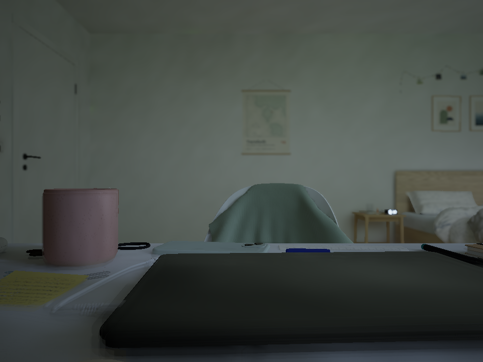
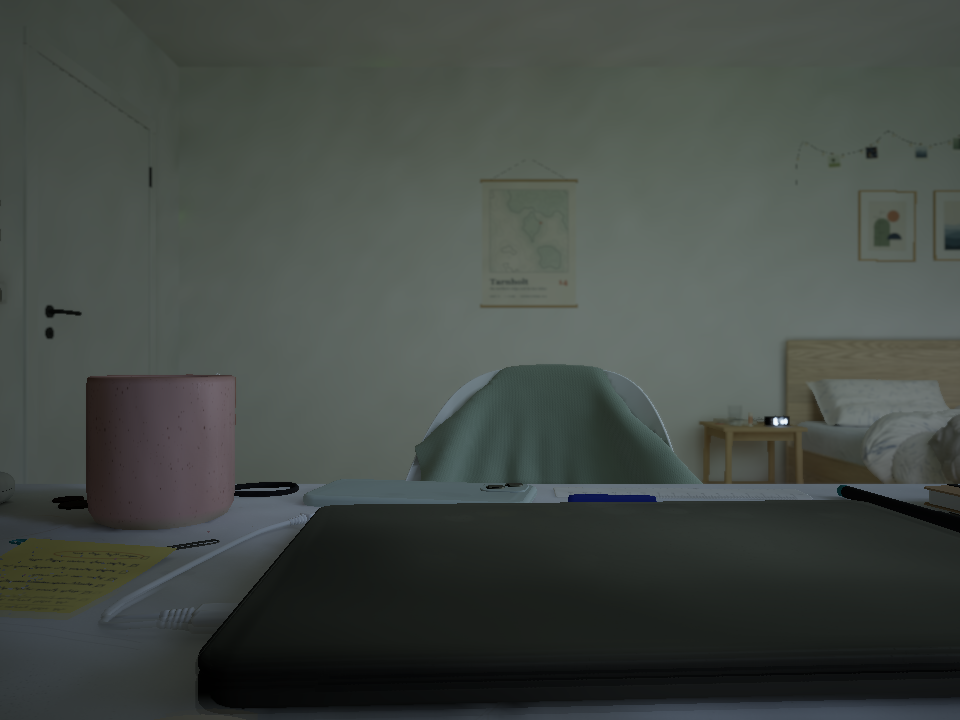
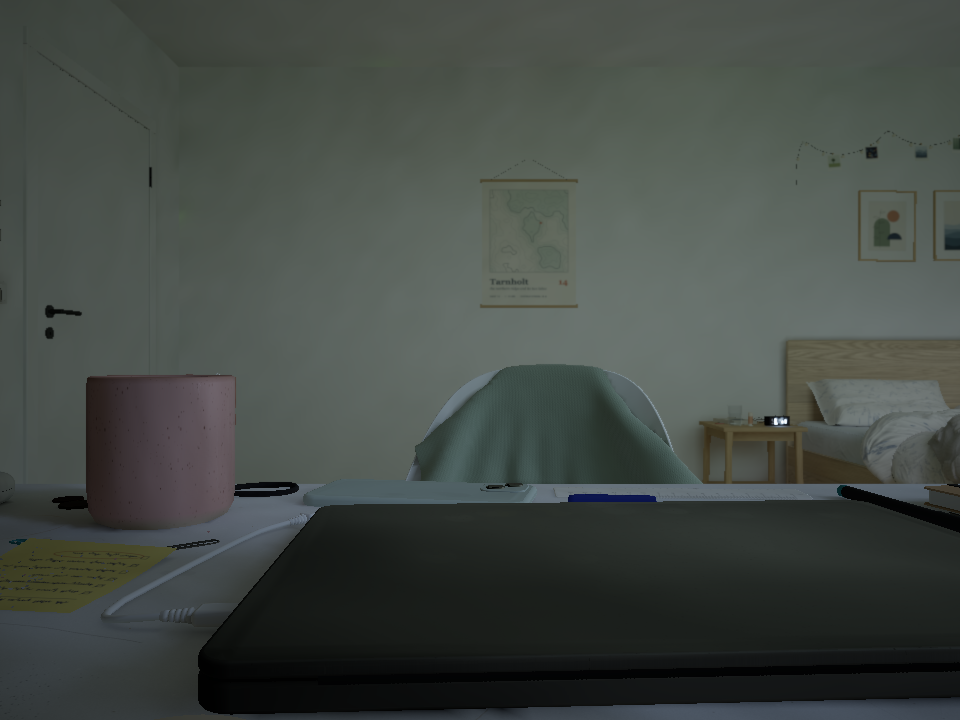
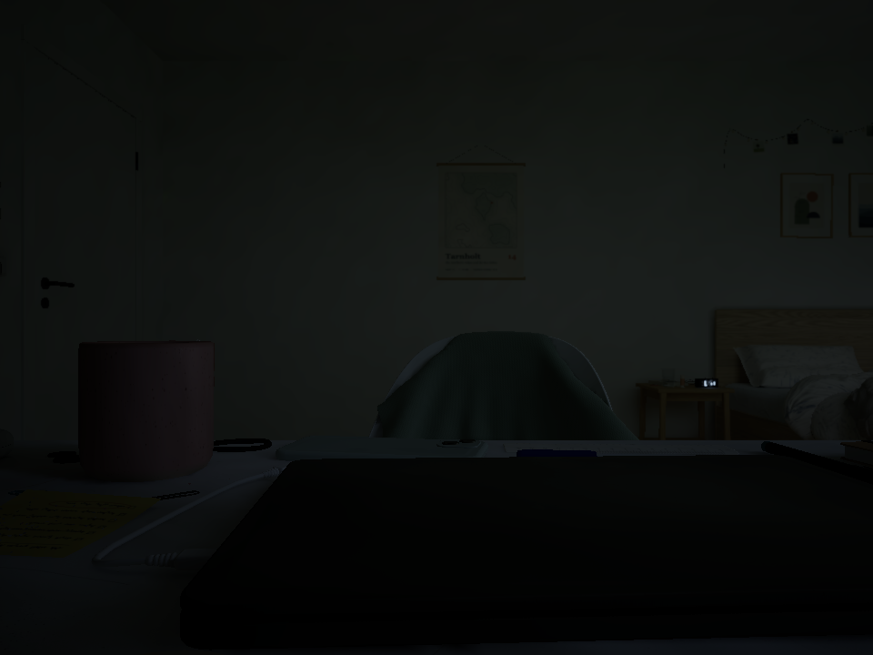

Actual 960×720 Ground Glass frames · WebGL2 / Apple Metal · HDR HalfFloat · 302/302 baked GI. Select an image to view native pixels. Each row keeps the same camera pose and lens; see frame, camera and surface data.
Wide Room: throw near, duvet middle, headboard and wall far. Focus breathing changes framing; compare corresponding objects.
Display-only exposure compensation equalizes presentation for sharpness inspection; it does not change optical illumination. The fixed-exposure f/22 image separately shows physical darkening.




The +9.8° setting aligns an approximate plane in canonical geometry, but the visible sharpness improvement is not established. The duvet is folded; these images are diagnostic evidence, not an accepted Scheimpflug demonstration.
The door and clothing are partly occluded, and visual Swing acceptance remains open. The plane calibration does not establish a successful photographic demonstration.
Compound movement is deferred. The contact sheet does not establish full upstream material parity or calibrated blur accuracy.